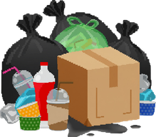

Nivel 1 Playa sepultada
Arena, palmeras e islas flotantes cubiertas de latas, cajas y bolsas. Aquí aprendes a recoger, separar y saltar entre plataformas.
- Monedas
- 14
- Basura
- 18
- Jefe
- Saqueador de la costa
Peligros: lanzas, cangrejos patrulleros y tiradores.
Basura de la zona
